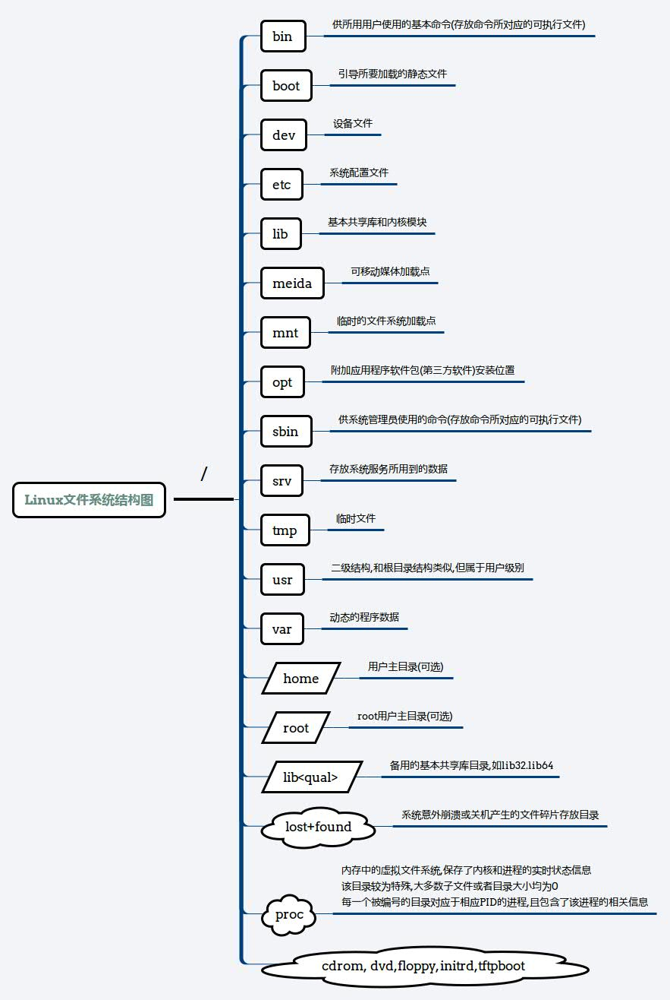
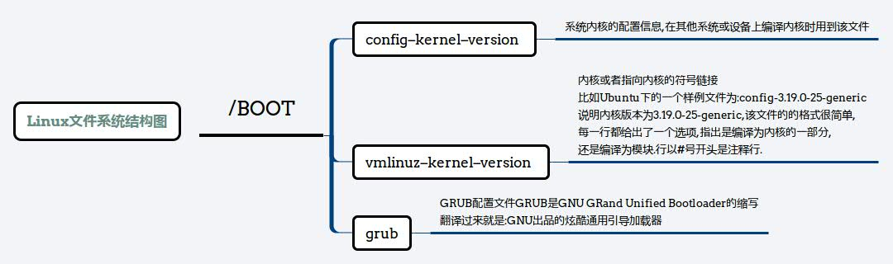
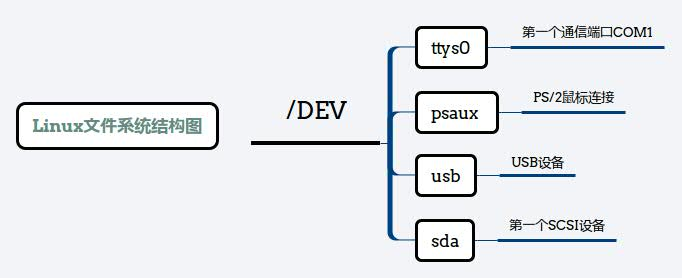
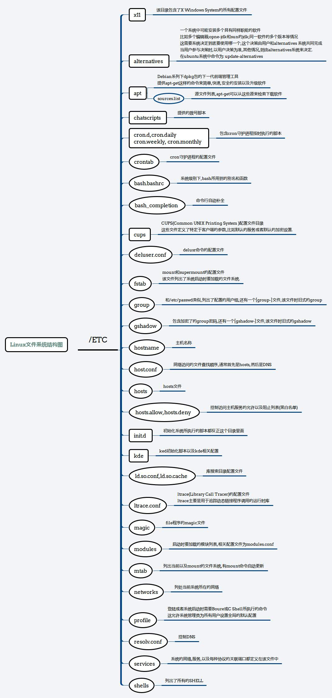
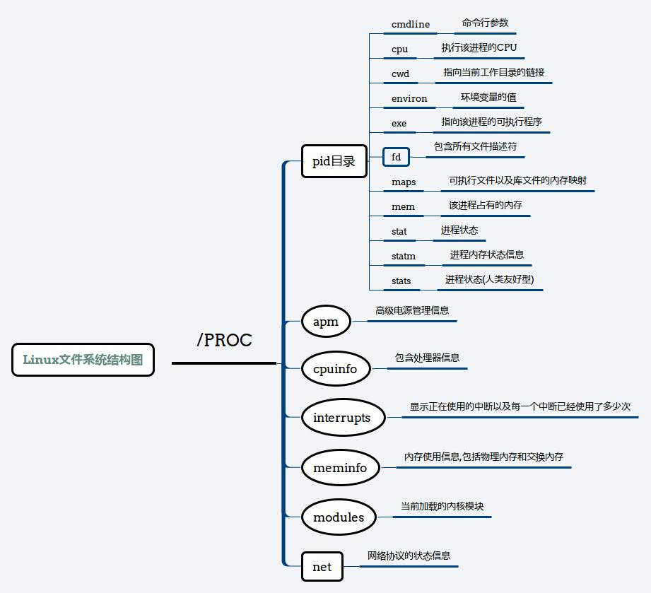

文末我也提供了XMind的源文件,如果你使用了,我唯一的要求是请你在参考链接里给出本篇文章的源地址.
本文将简单的说一下Linux的文件系统结构,主要参考的是Linux-Filesystem-Hierarchy,
该文档的PDF可以从
这里找到.
我用XMind绘画了Linux系统结构中的一些主要部分,因为有些目录包含内如实在太多.
1.根目录

2.boot目录

3.dev目录

4.etc目录

5.proc目录

我也提供出XMind的源文件,下载链接如下,如果你使用了,我唯一的要求是请你在参考链接里给出本篇文章的源地址:
- root.xmind
- boot.xmind
- dev.xmind
- etc.xmind
- proc.xmind